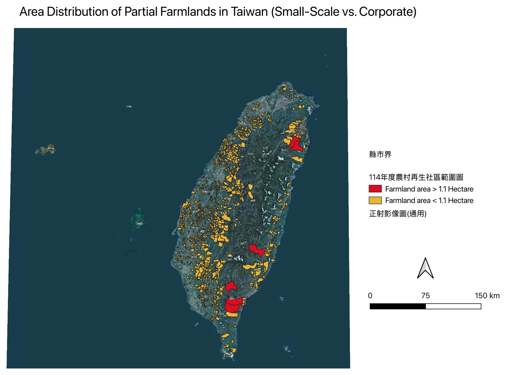
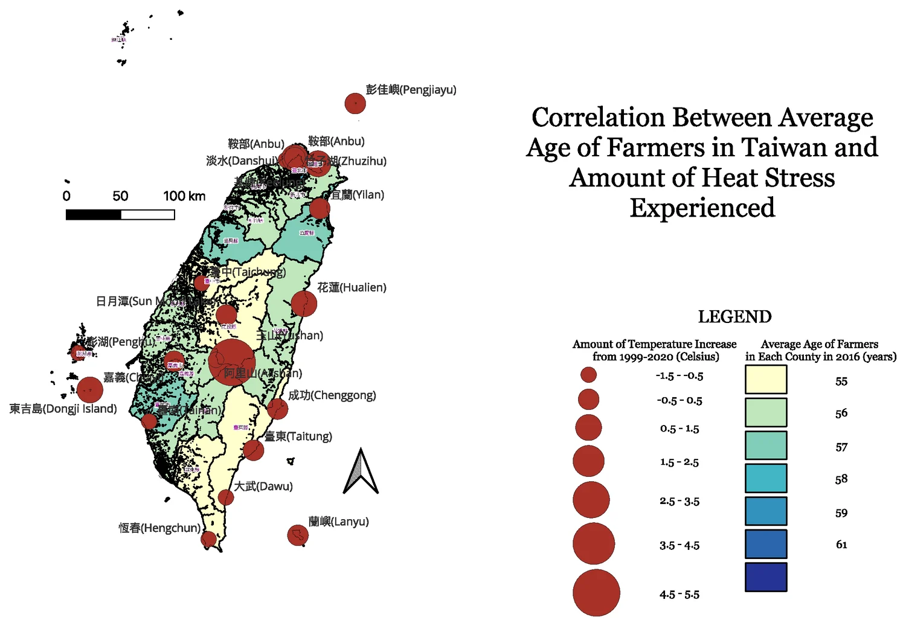
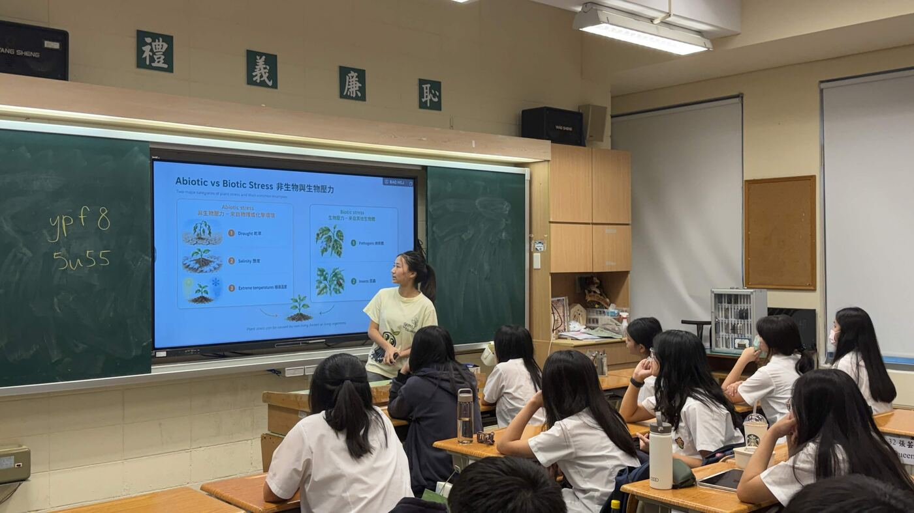
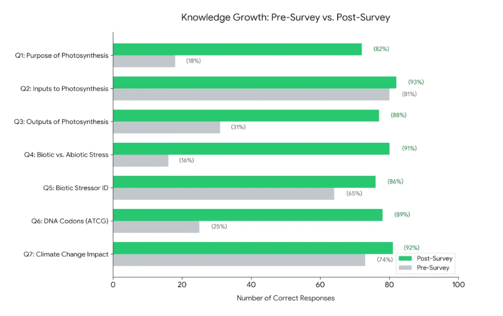
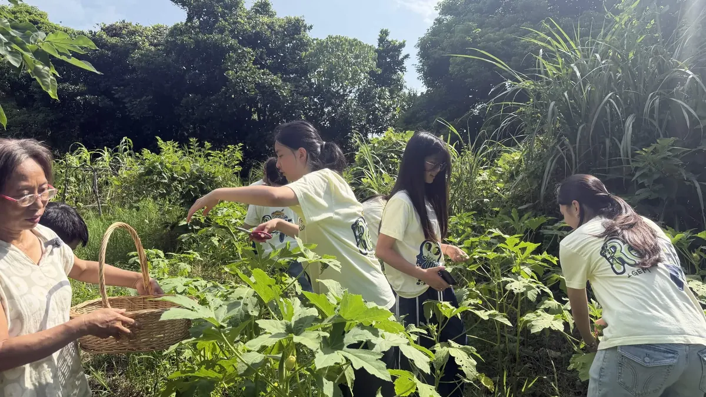

Overview
Sustainability has always been a topic on the world’s mind, and evident in every sector and corner of our lives. Our project started as a way to help farmers combat climate-related stress, but as we continued to do our project we realized that one of the best ways to combat that is to incorporate various concepts of sustainability into our project. Sustainability is not only limited to environmental sustainability, but also the sustainability of our societal structure, ensuring that the education and knowledge we provide to the next generation is sufficient to sustain current progress and advance, to sustain the rights of all people regardless of demographic. That is what sustainability is to GEMS-Taiwan, and here are some ways that we’ve tried to make our own contributions to the big mission that is sustainability. These are based on the Sustainable Development Goals (SDGs) agreed upon by the United Nation (UN) to achieve by the year 2050.
Protectants that keep a stressed crop producing, made on the farm that uses them.
10 Reduced inequalitiesProfit from industrial sales and data subsidises small farmers’ purchases or rentals.
4 Quality educationAn education website, school lessons with pre and post surveys, and a public forum.
15 Life on landNatural protectants in contained production, instead of chemical runoff.
Why we chose these SDGs
Out of all the 17 SDGs available, we chose our SDGs first based on their relation to our project, then we narrowed it down based on which ones we can actually make an impact on and change, whether through hypothetical implementation of our business plan, through current real-life action, or
Seventeen goals is more than a first-year team can address honestly. Before writing anything we set two rules for what could go on this page.
A goal is claimed only if we can point at something we built, measured or changed. An intention is not an impact, and a page of intentions would be worth nothing to a judge and less to a farmer.
Every goal then answers the same three questions in the same order. What is the problem, stated in the terms the goal itself uses? What does ReLeaf actually do about it? And what is our evidence that the second thing addresses the first? Where the answer to the third question is not yet, the section says so and keeps the goal, because a goal we are working towards without evidence is still worth declaring as long as it is labelled.
SDG 2 · Zero hunger
2.3 double the agricultural productivity and incomes of small-scale food producers. 2.4 resilient agricultural practices that increase productivity and strengthen capacity for adaptation to climate change and other disasters [2].
Problem
While we are aware that there are a plethora of factors that contribute to the food crises worldwide, such as distribution, one of those factors is food production, where agricultural yield is actively decreasing due to issues such as climate stress and pollution, while the population grows at an exponential rate. This is especially acute for farming families that not only sell their crops, but rely on their farm to feed themselves, forcing them to make compromises between eating and earning money. Early on into the project, we talked with the leader of Ubuntu Social Enterprise Ghana. From that meeting, we learned that it’s true that climate is actively harming their crops and making it harder to farm on generational land.
Solution
Our project can directly impact this and increase food production, as the usage of our protectants on crops can prevent them from having intense adverse effects to stress and instead continue to focus on producing their crops. We’ve proven that plants can grow better under stress with our Arabidopsis (see Plants), which as a relative to mustard plants we know will at least translate into some other crops. In the long term, our bioreactor can help gradually increase the amount of crops that are produced and reduce the impact of chemical pollution by allowing the land to heal over time on its own. Though we do not intend to directly solve world hunger, we do hope to alleviate not only farmers’ financial pain but also provide more healthy and sustainable food sources to the world.

SDG 10 · Reduced inequalities
10.1 sustain income growth of the bottom 40 per cent of the population at a rate above the national average. 10.2 empower and promote the economic inclusion of all, irrespective of status [2].
Problem
Industrial farms often have the resources, money, and ability to obtain various technologies and hardware that can help them run their farms, while small farmers often face monetary issues or reservations regarding using newer products on their farmland, because of limited space.
Solution
We plan to use the profit we obtain from selling devices to industrial farmers or selling data to researchers to subsidise small farmers’ purchases or allow unions or similar organisations to rent bioreactors instead, making the price more manageable and friendly towards them. The full model is in the social business model canvas.
Taiwanese farmland is made of small holdings. Our geospatial layer of rural regeneration communities splits at 1.1 hectares, the national average holding, and only three communities in the layer sit above it. The people working that land are not young: average farmer age by county ran between 55 and 61 years in 2016.


SDG 4 · Quality education
4.7 ensure all learners acquire the knowledge and skills needed to promote sustainable development. 4.4 increase the number of people with relevant skills [2].
Problem
A lot of people have misconceptions regarding synthetic biology due to not knowing where to look or not having access to the resources to learn about it. This may cause them to act maliciously or ignorantly towards new inventions and products due to that very lack of understanding.
Solution
We have an education website where we compiled all of the education resources from this year and previous years, along with basic introductions to synthetic biology. Through this website, people can learn more about synthetic biology and teachers can sign up for us to teach lessons for their classes inside that website. Additionally, we’ve done a public forum where we introduce our project and explain about synthetic biology to the public. Through this, we hope to be able to reach out and tell people that synthetic biology is something that will be used to help and advance society, and encourage people to learn more about synthetic biology on their own.



SDG 15 · Life on land
15.3 combat desertification, restore degraded land and soil. 15.5 reduce the degradation of natural habitats and halt the loss of biodiversity [2].
Problem
Chemical fertilizers and protectants often cause runoff and environmental pollution, which can lead to the destruction of local ecosystems. Issues such as eutrophication, poisoning, and accidental killing are all things that arise from the usage of chemical fertilizers and protectants on farms. This is not only detrimental to the environment, but also causes farmland to later become harder to cultivate crops on and make the resulting crops to be unhealthy for the human body.
Solution
While our product cannot reverse the damage done to the environment and soil directly, it can prevent further deterioration of its surrounding ecosystem. The protectants produced from our bioreactor are entirely natural and already exist in plants prior to exposure to our bioreactor, and the safety measures in the bioreactor itself ensure containment unless under extenuating circumstances. Usage of our bioreactor over time can allow for the previous pollution to slowly go away on its own while maintaining and gradually increasing the quality of soil.
How the bioreactor keeps the engineered Bacillus subtilis inside is described on Bioreactor and Safety; how each market regulates it is on Laws and Regulations.
Potential negatives
We can say without hesitation that we want our project to do as much good to the world as possible, but it’s unavoidable that the usage of our product might indirectly have adverse effects on the environment and attitudes of the people that use them. Here, we want to acknowledge those negatives as a part of our product that we hope we can change, but also realize that no matter how good something can be there will always be inherent adverse effects to everything.
“Sometimes, giving too much is not necessarily beneficial for a living organism; instead, it can take away its ability to survive and thrive on its own.”
Though we want to promote sustainability, and while our project’s method of producing protectants is undeniably more sustainable than chemical protectants, the usage of our product doesn’t promote longevity. Due to the fact that our product always immediately supplies plants with the necessary protectants, it might make it so that the plants never actually grow their own resilience and have to rely on our protectant to grow properly, which can actually be a net negative and set back the progress on plant resilience. This was mentioned by an organic farmer, Ms. Chen, who stated that her plants eventually grew to be as big as they are because she allowed them to grow and survive on their own: essentially survival of the fittest to let her plants thrive. Plants that use our protectants will have a bit of a hard time building resilience on their own, and may even succumb to climate stress more easily once taken off of our protectants.


Our partial answer is a design rule rather than a rebuttal: ReLeaf is meant to operate periodically, acting on forecast stress up to a dose validated on plants and then stopping, so that protection stays in proportion to need. Whether a plant grown under periodic protection is more or less tolerant the following season than one grown without it has not been tested.
Stakeholder consultation
The people below shaped the sections they sit next to. The full record of each meeting is on Integrated Human Practices.
| Who | When | What it changed here |
|---|---|---|
| Ubuntu Social Enterprise Ghana (USE-GH) | Early in the project | The account of climate damage on generational farmland under SDG 2, and the social enterprise model behind SDG 10. |
| Ms. Chen, natural farmer, Tamsui | 21 July 2026 | The dependency objection under potential negatives. |
| CH Biotech | 9 July 2026 | The commercial peptide used in the plant tests under SDG 2, and the regulatory work behind SDG 15’s containment question. |
| Public forum, speakers and the floor | 5 September 2026 | The public side of SDG 4, and farmers in the audience testing the affordability case under SDG 10. |
Long-term impact
This section is still to be written by the team. Until it is, the business plan’s year-by-year development and deployment targets are on Entrepreneurship, and the maps of farm size, farmer age and warming that show where ReLeaf would matter most are on Geospatial Analysis.
References
- United Nations General Assembly. Transforming our world: the 2030 Agenda for Sustainable Development. A/RES/70/1, 25 September 2015.
- United Nations, Department of Economic and Social Affairs. The 17 Goals and their targets. sdgs.un.org/goals. Target wording on this page is abbreviated; the full text is at the link.